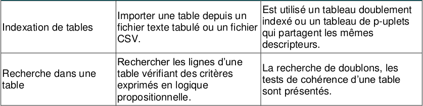
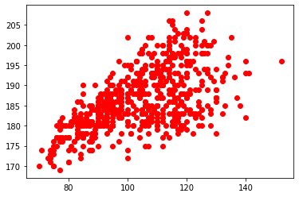
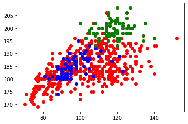

5.1 Manipulation de fichiers csv⚓︎

Les fichiers CSV (pour Comma Separated Values) sont des fichiers-texte (ils ne contiennent aucune mise en forme) utilisés pour stocker des données, séparées par des virgules (ou des points-virgules, ou des espaces...). Il n'y a pas de norme officielle du CSV.
1. Ouverture d'un fichier CSV par des logiciels classiques⚓︎
- Télécharger le fichier exemple.csv
- Ouvrir ce fichier avec un éditeur simple comme le Bloc-Notes.
- Rajouter une ligne avec une personne supplémentaire, sauvegarder le fichier.
- Ouvrir le fichier avec LibreOffice.
2. Exploitation d'un fichier CSV en Python avec le module CSV⚓︎
L'utilisation d'un tableur peut être délicate lorsque le fichier CSV comporte un très grand nombre de lignes.
Python permet de lire et d'extraire des informations d'un fichier CSV même très volumineux, grâce à des modules dédiés, comme le bien-nommé csv (utilisé ici) ou bien pandas (qui sera vu plus tard).
2.1 Première méthode⚓︎
Le script suivant :
| 🐍 Script Python | |
|---|---|
1 2 3 4 5 6 7 8 | |
donne :
['Prénom', 'Nom', 'Email', 'SMS']
['John', 'Smith', 'john@example.com', '33123456789']
['Harry', 'Pierce', 'harry@example.com', '33111222222']
['Howard', 'Paige', 'howard@example.com', '33777888898']
Problèmes
- Les données ne sont pas structurées : la première ligne est la ligne des «descripteurs» (ou des «champs»), alors que les lignes suivantes sont les valeurs de ces descripteurs.
- La variable
donneesn'est pas exploitable en l'état. Ce n'est pas une structure connue.
2.2 Améliorations⚓︎
Au lieu d'utiliser la fonction csv.reader(), utilisons csv.DictReader(). Comme son nom l'indique, elle renverra une variable contenant des dictionnaires.
Le script suivant :
| 🐍 Script Python | |
|---|---|
1 2 3 4 5 6 7 8 | |
donne
{'Prénom': 'John', 'Nom': 'Smith', 'Email': 'john@example.com', 'SMS': '33123456789'}
{'Prénom': 'Harry', 'Nom': 'Pierce', 'Email': 'harry@example.com', 'SMS': '33111222222'}
{'Prénom': 'Howard', 'Nom': 'Paige', 'Email': 'howard@example.com', 'SMS': '33777888898'}
C'est mieux ! Les données sont maintenant des dictionnaires. Mais nous avons juste énuméré 3 dictionnaires. Comment ré-accéder au premier d'entre eux, celui de John Smith ? Essayons :
>>> donnees[0]
---------------------------------------------------------------------------
TypeError Traceback (most recent call last)
<ipython-input-3-9914ab00321e> in <module>
----> 1 donnees[0]
TypeError: 'DictReader' object does not support indexing
2.3 Une liste de dictionnaires⚓︎
Nous allons donc créer une liste de dictionnaires.
Le script suivant :
| 🐍 Script Python | |
|---|---|
1 2 3 4 5 6 7 8 | |
permet de faire ceci :
>>> amis
[{'Prénom': 'John',
'Nom': 'Smith',
'Email': 'john@example.com',
'SMS': '33123456789'},
{'Prénom': 'Harry',
'Nom': 'Pierce',
'Email': 'harry@example.com',
'SMS': '33111222222'},
{'Prénom': 'Howard',
'Nom': 'Paige',
'Email': 'howard@example.com',
'SMS': '33777888898'}]
>>> print(amis[0]['Email'])
john@example.com
>>> print(amis[2]['Nom'])
Paige
3. Un fichier un peu plus intéressant : les joueurs de rugby du TOP14⚓︎
Le fichier top14.csv contient tous les joueurs du Top14 de rugby, saison 2019-2020, avec leur date de naissance, leur poste, et leurs mensurations.
Ce fichier a été généré par Rémi Deniaud, de l'académie de Bordeaux.
Question 1
Stocker dans une variable joueurs les renseignements de tous les joueurs présents dans ce fichier csv.
Correction
| 🐍 Script Python | |
|---|---|
1 2 3 4 5 6 7 8 | |
3.1 Première analyse⚓︎
Question 2
Combien de joueurs sont présents dans ce fichier ?
Correction
>>> len(joueurs)
595
Question 3
Quel est le nom du joueur n°486 ?
Correction
>>> joueurs[486]['Nom']
'Wenceslas LAURET'
3.2 Extraction de données particulières⚓︎
Question 4
En 2019, où jouait Baptiste SERIN ?
Correction
La méthode la plus naturelle est de parcourir toute la liste jusqu'à trouver le bon joueur, puis d'afficher son équipe.
>>> for joueur in joueurs :
if joueur['Nom'] == 'Baptiste SERIN' :
print(joueur['Equipe'])
Une méthode plus efficace est d'utiliser une liste par compréhension incluant un test.
>>> clubSerin = [joueur['Equipe'] for joueur in joueurs if joueur['Nom'] == 'Baptiste SERIN']
>>> clubSerin
Question 5
Qui sont les joueurs de plus de 140 kg ?
Attention à bien convertir en entier la chaine de caractère renvoyée par la clé Poids, à l'aide de la fonction int().
Correction
>>> lourds = [(joueur['Nom'], joueur['Poids']) for joueur in joueurs if int(joueur['Poids']) > 140]
>>> lourds
4. Exploitation graphique⚓︎
Nous allons utiliser le module Matplotlib pour illustrer les données de notre fichier csv.
Pour tracer un nuage de points (par l'instruction plt.plot), Matplotlib requiert :
- une liste
Xcontenant toutes les abscisses des points à tracer. - une liste
Ycontenant toutes les ordonnées des points à tracer.
4.1 Exemple⚓︎
| 🐍 Script Python | |
|---|---|
1 2 3 4 5 | |
plt.plot(X, Y, 'ro') :
Xsont les abscisses,Ysont les ordonnées,'ro'signifie :

4.2 Application⚓︎
Question 6
Afficher sur un graphique tous les joueurs de rugby du Top14, en mettant le poids en abscisse et la taille en ordonnée.
Correction
| 🐍 Script Python | |
|---|---|
1 2 3 4 | |

Question 7
Faire apparaître ensuite les joueurs évoluant au poste de Centre en bleu, et les 2ème lignes en vert.
Correction
| 🐍 Script Python | |
|---|---|
1 2 3 4 5 6 7 8 9 10 11 12 13 14 15 16 17 | |
